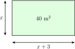
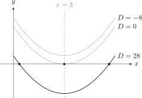
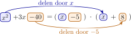
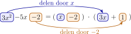

Vierkantsvergelijkingen
\(ax^2+bx+c=0\)
\(\displaystyle x=\frac {-b\pm \sqrt {b^2-4ac}}{2a}\)
I Een vergelijking met \(x^2\)
Een rechthoekige moestuin is \(3\) m langer dan breed en heeft een oppervlakte van \(40\) m\(^2\). Hoe breed is hij?
Noemen we de breedte \(x\) (in meter), dan is de lengte \(x+3\).

De oppervlakte geeft
\[ x(x+3)=40. \]
We werken de haakjes uit en brengen alles naar links:
\[ x^2+3x-40=0. \]
Dit is een vierkantsvergelijking: een vergelijking die na herleiding de vorm
\[ ax^2+bx+c=0 \qquad (a\neq 0) \]
heeft. We noemen dit de standaardvorm. De getallen \(a\), \(b\) en \(c\) zijn de coëfficiënten.
We leren drie werkwijzen om zo’n vergelijking op te lossen.
-
• Ontbinden met de AC-methode. Dit gaat snel, maar lukt niet altijd.
-
• De discriminantmethode. Werkt altijd en zegt hoeveel oplossingen er zijn.
-
• Een oplossing is al bekend. Met één oplossing vind je de andere door twee termen te delen.
Probeer eerst de AC-methode. Lukt het niet na twee of drie minuten, dan schakel je over op de discriminant. Ken je al een oplossing, dan is de derde werkwijze het snelst.
Alle werkwijzen steunen op dezelfde regel, het nulproduct:
\[ A\cdot B=0 \iff A=0 \ \text {of}\ B=0. \]
II Ontbinden met de AC-methode
1 Het idee
We werken een product van twee factoren uit:
\(\seteqnumber{0}{}{0}\)\begin{align*} (x+2)(3x+2) &= 3x^2+2x+6x+4 \\ &= 3x^2+8x+4. \end{align*} De middelste term \(8x\) is dus de som van twee termen: \(6x\) en \(2x\). Hun coëfficiënten hebben som \(6+2=8=b\) en product \(6\cdot 2=12=a\cdot c\).
Nu draaien we dit om, met dezelfde vergelijking. We vertrekken van \(3x^2+8x+4\) en zoeken twee getallen met som \(b=8\) en product \(a\cdot c=12\). Dat zijn \(6\) en \(2\). We splitsen de middelste term en groeperen:
\(\seteqnumber{0}{}{0}\)\begin{align*} 3x^2+8x+4 &= 3x^2+6x+2x+4 \\ &= 3x(x+2)+2(x+2) \\ &= (x+2)(3x+2). \end{align*} Zo staat er weer een product, en dat lossen we op met het nulproduct.
Dit werkt voor elke vergelijking \(ax^2+bx+c=0\). We zoeken twee getallen \(m\) en \(n\) met som \(b\) en product \(a\cdot c\). Daarmee splitsen we de middelste term en ontbinden we door te groeperen.
2 Stappenplan
-
1. Breng alles naar links: \(ax^2+bx+c=0\).
-
2. Bereken \(A=a\cdot c\).
-
3. Zoek \(m\) en \(n\) met \(m+n=b\) en \(mn=A\).
-
4. Splits \(bx\) als \(mx+nx\): \(ax^2+mx+nx+c\).
-
5. Groepeer per twee, haal per paar de gemeenschappelijke factor uit en haal dan de gemeenschappelijke haakjes uit.
-
6. Los het product \((\cdot )(\cdot )=0\) op met het nulproduct.
3 Voorbeeld
Stap 1. Alles staat al links, dus \(a=3\), \(b=8\) en \(c=4\).
Stap 2. \(A=a\cdot c=3\cdot 4=12\).
Stap 3. We zoeken \(m\) en \(n\) met \(m+n=8\) en \(mn=12\). We schrijven de factorparen van \(12\) in een tabel:
\[ \begin {array}{r|ccc} m & 12 & 6 & 4 \\ n & 1 & 2 & 3 \\ \hline m+n & 13 & \boxed {8} & 7 \end {array} \]
Dus \(m=6\) en \(n=2\).
Stap 4. We splitsen de middelste term:
\[ 3x^2+8x+4=3x^2+\underbrace {6x+2x}_{8x}+4. \]
Stap 5. We groeperen per twee en ontbinden:
\[ (3x^2+6x)+(2x+4)=3x(x+2)+2(x+2)=(x+2)(3x+2). \]
Stap 6. Het nulproduct geeft
\[ (x+2)(3x+2)=0 \iff x+2=0 \ \text {of}\ 3x+2=0 \iff x=-2 \ \text {of}\ x=-\frac {2}{3}. \]
Controle. Voor \(x=-2\) vinden we \(3\cdot 4+8\cdot (-2)+4=12-16+4=0\). Voor \(x=-\dfrac {2}{3}\) vinden we \(3\cdot \dfrac {4}{9}-\dfrac {16}{3}+4=\dfrac {4}{3}-\dfrac {16}{3}+\dfrac {12}{3}=0\).
4 Terug naar de tuin
We lossen de vergelijking van de tuin op met de AC-methode.
Stap 1. We lezen \(a\), \(b\) en \(c\) af:
\[ \begin {array}{cccc} x^2 & +3x & -40 & =0 \\ \uparrow & \uparrow & \uparrow & \\ a=1 & b=3 & c=-40 & \end {array} \]
Stap 2. We berekenen \(A\):
\[ \Rightarrow \quad A=a\cdot c=1\cdot (-40)=-40. \]
Stap 3. We zoeken \(m\) en \(n\) met
\(\seteqnumber{0}{}{0}\)\begin{align*} m+n &= b = 3, \\ m\cdot n &= A = -40. \end{align*} Het product is negatief, dus \(m\) en \(n\) hebben een verschillend teken. De som is positief, dus het grootste getal is positief. We schrijven de factorparen van \(40\) in een tabel:
\[ \begin {array}{r|cccc} m & 40 & 20 & 10 & 8 \\ n & -1 & -2 & -4 & -5 \\ \hline m+n & 39 & 18 & 6 & \boxed {3} \end {array} \]
Het paar \(m=8\) en \(n=-5\) voldoet.
Stap 4 tot 6. We splitsen, ontbinden en lossen op:
\(\seteqnumber{0}{}{0}\)\begin{align*} x^2+3x-40=0 &\iff x^2+8x-5x-40=0 \\ &\iff x(x+8)-5(x+8)=0 \\ &\iff (x+8)(x-5)=0 \\ &\iff x=-8 \ \text {of}\ x=5. \end{align*}
Een breedte kan niet negatief zijn:
\[ x=-8\ \lightning \]
De tuin is dus \(5\) m breed en \(8\) m lang. Controle: \(5\cdot 8=40\).
Bij \(a=1\) hoef je niet te splitsen: \(m\) en \(n\) staan dan meteen in de factoren, zoals \((x+8)(x-5)\).
5 Probeer het zelf
Los op met de AC-methode: \(2x^2+5x-3=0\).
Stap 1. We lezen de coëfficiënten af:
\[ a=\opl [1cm]{2},\qquad b=\opl [1cm]{5},\qquad c=\opl [1cm]{-3}. \]
Stap 2. Het product is \(A=a\cdot c=\opl [2cm]{-6}\).
Stap 3. We zoeken \(m+n=5\) en \(mn=-6\). Vul de tabel met de factorparen van \(-6\) aan:
\[ \begin {array}{r|cccc} m & 1 & 2 & 3 & 6 \\ n & -6 & -3 & -2 & -1 \\ \hline m+n & \opl [samen]{-5} & \opl [samen]{-1} & \opl [samen]{1} & \opl [samen]{\boxed {5}} \end {array} \]
Dus
\[ m=\opl [1cm]{6}\qquad \text {en}\qquad n=\opl [1cm]{-1}. \]
Stap 4. We splitsen de middelste term:
\[ 2x^2+5x-3=2x^2+\opl [2.5cm]{6x-x}-3. \]
Stap 5. We groeperen en ontbinden:
\[ \opl [5cm]{2x(x+3)-(x+3)}=\opl [3.5cm]{(x+3)(2x-1)}. \]
Stap 6. Het nulproduct geeft
\[ x=\opl [1.5cm]{-3}\qquad \text {of}\qquad x=\opl [1.5cm]{\frac {1}{2}}. \]
6 Oefeningen
Oefening 1
Los op door te ontbinden in factoren. Hier is \(a=1\).
-
(a) \(x^2+5x+6=0\)
\(x=-2\) of \(x=-3\) \(A=6\) en \(b=5\), dus \(mn=6\) en \(m+n=5\).
\[ \begin {array}{r|cc} m & 1 & 2 \\ n & 6 & 3 \\ \hline m+n & 7 & \boxed {5} \end {array} \]
Dus \(m=2\) en \(n=3\).
\(\seteqnumber{0}{}{0}\)\begin{align*} x^2+5x+6=0 &\iff (x+2)(x+3)=0 \\ &\iff x=-2 \ \text {of}\ x=-3. \end{align*}
-
(b) \(x^2-7x+12=0\)
\(x=3\) of \(x=4\) \(A=12\) en \(b=-7\), dus \(mn=12\) en \(m+n=-7\).
\[ \begin {array}{r|ccc} m & -1 & -2 & -3 \\ n & -12 & -6 & -4 \\ \hline m+n & -13 & -8 & \boxed {-7} \end {array} \]
Dus \(m=-3\) en \(n=-4\).
\(\seteqnumber{0}{}{0}\)\begin{align*} x^2-7x+12=0 &\iff (x-3)(x-4)=0 \\ &\iff x=3 \ \text {of}\ x=4. \end{align*}
-
(c) \(x^2+3x-28=0\)
\(x=-7\) of \(x=4\) \(A=-28\) en \(b=3\), dus \(mn=-28\) en \(m+n=3\).
\[ \begin {array}{r|ccc} m & 28 & 14 & 7 \\ n & -1 & -2 & -4 \\ \hline m+n & 27 & 12 & \boxed {3} \end {array} \]
Dus \(m=7\) en \(n=-4\).
\(\seteqnumber{0}{}{0}\)\begin{align*} x^2+3x-28=0 &\iff (x+7)(x-4)=0 \\ &\iff x=-7 \ \text {of}\ x=4. \end{align*}
-
(d) \(x^2-2x-35=0\)
\(x=-5\) of \(x=7\) \(A=-35\) en \(b=-2\), dus \(mn=-35\) en \(m+n=-2\).
\[ \begin {array}{r|cc} m & 1 & 5 \\ n & -35 & -7 \\ \hline m+n & -34 & \boxed {-2} \end {array} \]
Dus \(m=5\) en \(n=-7\).
\(\seteqnumber{0}{}{0}\)\begin{align*} x^2-2x-35=0 &\iff (x+5)(x-7)=0 \\ &\iff x=-5 \ \text {of}\ x=7. \end{align*}
-
(e) \(x^2+8x+15=0\)
\(x=-3\) of \(x=-5\) \(A=15\) en \(b=8\), dus \(mn=15\) en \(m+n=8\).
\[ \begin {array}{r|cc} m & 1 & 3 \\ n & 15 & 5 \\ \hline m+n & 16 & \boxed {8} \end {array} \]
Dus \(m=3\) en \(n=5\).
\(\seteqnumber{0}{}{0}\)\begin{align*} x^2+8x+15=0 &\iff (x+3)(x+5)=0 \\ &\iff x=-3 \ \text {of}\ x=-5. \end{align*}
Oefening 2
Los op met de AC-methode. Hier is \(a\neq 1\). Maak een tabel met de factorparen van \(A=a\cdot c\) tot je \(m+n=b\) vindt. Is \(A\) negatief, dan hebben \(m\) en \(n\) een verschillend teken.
-
(a) \(2x^2+7x+3=0\)
\(x=-\dfrac {1}{2}\) of \(x=-3\) \(A=6\) en \(b=7\), dus \(mn=6\) en \(m+n=7\).
\[ \begin {array}{r|cc} m & 1 & 2 \\ n & 6 & 3 \\ \hline m+n & \boxed {7} & 5 \end {array} \]
Dus \(m=1\) en \(n=6\).
\(\seteqnumber{0}{}{0}\)\begin{align*} 2x^2+7x+3=0 &\iff 2x^2+x+6x+3=0 \\ &\iff x(2x+1)+3(2x+1)=0 \\ &\iff (2x+1)(x+3)=0 \\ &\iff x=-\dfrac {1}{2} \ \text {of}\ x=-3. \end{align*}
-
(b) \(3x^2-2x-8=0\)
\(x=-\dfrac {4}{3}\) of \(x=2\) \(A=-24\) en \(b=-2\), dus \(mn=-24\) en \(m+n=-2\).
\[ \begin {array}{r|cccc} m & 1 & 2 & 3 & 4 \\ n & -24 & -12 & -8 & -6 \\ \hline m+n & -23 & -10 & -5 & \boxed {-2} \end {array} \]
Dus \(m=4\) en \(n=-6\).
\(\seteqnumber{0}{}{0}\)\begin{align*} 3x^2-2x-8=0 &\iff 3x^2+4x-6x-8=0 \\ &\iff x(3x+4)-2(3x+4)=0 \\ &\iff (3x+4)(x-2)=0 \\ &\iff x=-\dfrac {4}{3} \ \text {of}\ x=2. \end{align*}
-
(c) \(4x^2-12x+8=0\)
\(x=1\) of \(x=2\) \(A=32\) en \(b=-12\), dus \(mn=32\) en \(m+n=-12\).
\[ \begin {array}{r|ccc} m & -1 & -2 & -4 \\ n & -32 & -16 & -8 \\ \hline m+n & -33 & -18 & \boxed {-12} \end {array} \]
Dus \(m=-4\) en \(n=-8\).
\(\seteqnumber{0}{}{0}\)\begin{align*} 4x^2-12x+8=0 &\iff 4x^2-4x-8x+8=0 \\ &\iff 4x(x-1)-8(x-1)=0 \\ &\iff (x-1)(4x-8)=0 \\ &\iff 4(x-1)(x-2)=0 \\ &\iff x=1 \ \text {of}\ x=2. \end{align*}
-
(d) \(5x^2+13x+8=0\)
\(x=-1\) of \(x=-\dfrac {8}{5}\) \(A=40\) en \(b=13\), dus \(mn=40\) en \(m+n=13\).
\[ \begin {array}{r|cccc} m & 1 & 2 & 4 & 5 \\ n & 40 & 20 & 10 & 8 \\ \hline m+n & 41 & 22 & 14 & \boxed {13} \end {array} \]
Dus \(m=5\) en \(n=8\).
\(\seteqnumber{0}{}{0}\)\begin{align*} 5x^2+13x+8=0 &\iff 5x^2+5x+8x+8=0 \\ &\iff 5x(x+1)+8(x+1)=0 \\ &\iff (x+1)(5x+8)=0 \\ &\iff x=-1 \ \text {of}\ x=-\dfrac {8}{5}. \end{align*}
-
(e) \(6x^2-7x-3=0\)
\(x=-\dfrac {1}{3}\) of \(x=\dfrac {3}{2}\) \(A=-18\) en \(b=-7\), dus \(mn=-18\) en \(m+n=-7\).
\[ \begin {array}{r|ccc} m & 1 & 2 & 3 \\ n & -18 & -9 & -6 \\ \hline m+n & -17 & \boxed {-7} & -3 \end {array} \]
Dus \(m=2\) en \(n=-9\).
\(\seteqnumber{0}{}{0}\)\begin{align*} 6x^2-7x-3=0 &\iff 6x^2+2x-9x-3=0 \\ &\iff 2x(3x+1)-3(3x+1)=0 \\ &\iff (3x+1)(2x-3)=0 \\ &\iff x=-\dfrac {1}{3} \ \text {of}\ x=\dfrac {3}{2}. \end{align*}
III De discriminantmethode
1 Wanneer ontbinden niet lukt
Bekijk \(x^2-6x+2=0\). Voor de AC-methode zoeken we \(m+n=-6\) en \(mn=2\). De gehele getallen \(-1\) en \(-2\) hebben product \(2\), maar hun som is \(-3\). Er is geen paar dat past.
Toch heeft de vergelijking oplossingen. Daarvoor gebruiken we een formule die altijd werkt. We berekenen eerst de discriminant
\[ D=b^2-4ac. \]
De discriminant beslist hoeveel reële oplossingen er zijn:
-
• Is \(D>0\), dan zijn er twee verschillende reële oplossingen.
-
• Is \(D=0\), dan is er één (dubbele) oplossing.
-
• Is \(D<0\), dan zijn er geen reële oplossingen.
Voor \(D\geq 0\) zijn de oplossingen
\[ \boxed {x=\frac {-b\pm \sqrt {D}}{2a}}. \]
Op de grafiek van \(y=x^2-6x+c\) zien we wat \(D\) doet. Hier is \(D=36-4c\): een andere \(c\) schuift de parabool op en neer. De top ligt op hoogte \(-\frac {D}{4a}\), dus hoe groter \(D\), hoe dieper de top. De nulpunten liggen symmetrisch rond de as \(x=-\frac {b}{2a}\), telkens op afstand \(\frac {\sqrt {D}}{2a}\).

De getallen \(m\) en \(n\) van de AC-methode bestaan precies wanneer \(D\) het kwadraat van een geheel getal is. Bij \(x^2-6x+2=0\) is \(D=28\), en dat is geen kwadraat. Zo verklaart de discriminant waarom ontbinden daar niet lukte.
2 Stappenplan
-
1. Schrijf \(ax^2+bx+c=0\) en lees \(a\), \(b\) en \(c\) af, met hun tekens.
-
2. Bereken \(D=b^2-4ac\).
-
3. Bepaal het teken van \(D\) en besluit hoeveel oplossingen er zijn.
-
4. Bereken de oplossingen met de formule.
-
5. Controleer in de oorspronkelijke vergelijking.
3 Voorbeeld 1
Stap 1. We lezen \(a\), \(b\) en \(c\) af:
\[ \begin {array}{cccc} x^2 & -6x & +2 & =0 \\ \uparrow & \uparrow & \uparrow & \\ a=1 & b=-6 & c=2 & \end {array} \]
Stap 2. We berekenen de discriminant:
\(\seteqnumber{0}{}{0}\)\begin{align*} D &= b^2-4ac \\ &= (-6)^2-4\cdot 1\cdot 2 \\ &= 36-8 \\ &= 28. \end{align*}
Stap 3. Omdat \(D=28>0\), zijn er twee verschillende reële oplossingen.
Stap 4. We vullen de formule in en vereenvoudigen met \(\sqrt {28}=\sqrt {4\cdot 7}=2\sqrt {7}\):
\(\seteqnumber{0}{}{0}\)\begin{align*} x &= \frac {-b\pm \sqrt {D}}{2a} \\ &= \frac {-(-6)\pm \sqrt {28}}{2\cdot 1} \\ &= \frac {6\pm 2\sqrt {7}}{2} \\ &= 3\pm \sqrt {7}. \end{align*}
Controle. Voor \(x=3+\sqrt {7}\) is \(x^2=16+6\sqrt {7}\), dus
\(\seteqnumber{0}{}{0}\)\begin{align*} x^2-6x+2 &= (16+6\sqrt {7})-6(3+\sqrt {7})+2 \\ &= 16+6\sqrt {7}-18-6\sqrt {7}+2 \\ &= 0. \end{align*} Voor \(x=3-\sqrt {7}\) is \(x^2=16-6\sqrt {7}\), dus
\(\seteqnumber{0}{}{0}\)\begin{align*} x^2-6x+2 &= (16-6\sqrt {7})-6(3-\sqrt {7})+2 \\ &= 16-6\sqrt {7}-18+6\sqrt {7}+2 \\ &= 0. \end{align*}
4 Voorbeeld 2
Stap 1. We lezen \(a\), \(b\) en \(c\) af:
\[ \begin {array}{cccc} 4x^2 & -12x & +9 & =0 \\ \uparrow & \uparrow & \uparrow & \\ a=4 & b=-12 & c=9 & \end {array} \]
Stap 2. We berekenen de discriminant:
\(\seteqnumber{0}{}{0}\)\begin{align*} D &= b^2-4ac \\ &= (-12)^2-4\cdot 4\cdot 9 \\ &= 144-144 \\ &= 0. \end{align*}
Stap 3. Omdat \(D=0\), is er één oplossing.
Stap 4. We vullen de formule in. Omdat \(\pm \sqrt {0}\) niets verandert, krijgen we twee keer dezelfde waarde:
\(\seteqnumber{0}{}{0}\)\begin{align*} x &= \frac {-b\pm \sqrt {D}}{2a} \\ &= \frac {-(-12)\pm \sqrt {0}}{2\cdot 4} \\ &= \frac {12}{8} \\ &= \frac {3}{2}. \end{align*}
5 Voorbeeld 3
Stap 1. We lezen \(a\), \(b\) en \(c\) af:
\[ \begin {array}{cccc} x^2 & +2x & +5 & =0 \\ \uparrow & \uparrow & \uparrow & \\ a=1 & b=2 & c=5 & \end {array} \]
Stap 2. We berekenen de discriminant:
\(\seteqnumber{0}{}{0}\)\begin{align*} D &= b^2-4ac \\ &= 2^2-4\cdot 1\cdot 5 \\ &= 4-20 \\ &= -16. \end{align*}
Stap 3. Omdat \(D=-16<0\), zijn er geen reële oplossingen.
Stap 4. De formule laat zien waarom:
\(\seteqnumber{0}{}{0}\)\begin{align*} x &= \frac {-b\pm \sqrt {D}}{2a} \\ &= \frac {-2\pm \sqrt {-16}}{2}\ \lightning \end{align*} Een negatief getal heeft geen reële vierkantswortel.
6 Probeer het zelf
Los op met de discriminant: \(2x^2-5x+2=0\).
Stap 1. We lezen de coëfficiënten af:
\[ a=\opl [1cm]{2},\qquad b=\opl [1cm]{-5},\qquad c=\opl [1cm]{2}. \]
Stap 2. De discriminant is
\[ D=b^2-4ac=\opl [5cm]{(-5)^2-4\cdot 2\cdot 2=25-16=9}. \]
Stap 3. Omdat \(D>0\), zijn er \(\opl [1cm]{2}\) reële oplossingen.
Stap 4. We vullen de formule in:
\[ x=\frac {-b\pm \sqrt {D}}{2a}=\opl [4cm]{\frac {5\pm \sqrt {9}}{4}=\frac {5\pm 3}{4}}. \]
Dus
\[ x=\opl [1.5cm]{2}\qquad \text {of}\qquad x=\opl [1.5cm]{\frac {1}{2}}. \]
Stap 5. We controleren \(x=2\):
\[ 2\cdot 2^2-5\cdot 2+2=\opl [3cm]{8-10+2=0}. \]
7 Oefeningen
Oefening 3
Los op met de discriminant. Hier is \(a=1\).
-
(a) \(x^2-6x+5=0\)
\(x=1\) of \(x=5\) \(D=(-6)^2-4\cdot 1\cdot 5=36-20=16>0\). Dus
\[ x=\frac {6\pm \sqrt {16}}{2}=\frac {6\pm 4}{2}. \]
Dat geeft \(x=5\) of \(x=1\).
-
(b) \(x^2-6x+2=0\)
\(x=3+\sqrt {7}\) of \(x=3-\sqrt {7}\) \(D=36-8=28>0\). Dus
\[ x=\frac {6\pm \sqrt {28}}{2}=\frac {6\pm 2\sqrt {7}}{2}=3\pm \sqrt {7}. \]
-
(c) \(x^2+4x+7=0\)
geen reële oplossingen \(D=4^2-4\cdot 1\cdot 7=16-28=-12<0\). Er zijn dus geen reële oplossingen:
\[ x=\frac {-4\pm \sqrt {-12}}{2}\ \lightning \]
-
(d) \(x^2-10x+25=0\)
\(x=5\) (dubbele oplossing) \(D=(-10)^2-4\cdot 1\cdot 25=100-100=0\). Dus
\[ x=\frac {10}{2}=5. \]
Dit is een dubbele oplossing.
-
(e) \(x^2+2x-11=0\)
\(x=-1+2\sqrt {3}\) of \(x=-1-2\sqrt {3}\) \(D=2^2-4\cdot 1\cdot (-11)=4+44=48>0\), en \(\sqrt {48}=4\sqrt {3}\). Dus
\[ x=\frac {-2\pm 4\sqrt {3}}{2}=-1\pm 2\sqrt {3}. \]
Oefening 4
Los op met de discriminant. Hier is \(a\neq 1\). Werk \(D=b^2-4ac\) eerst volledig uit voor je de wortel neemt, en let op de tekens van \(b\) en \(c\).
-
(a) \(2x^2-9x+10=0\)
\(x=2\) of \(x=\dfrac {5}{2}\) \(D=(-9)^2-4\cdot 2\cdot 10=81-80=1>0\). Dus
\[ x=\frac {9\pm 1}{4}. \]
Dat geeft \(x=\dfrac {5}{2}\) of \(x=2\).
-
(b) \(3x^2+4x+2=0\)
geen reële oplossingen \(D=4^2-4\cdot 3\cdot 2=16-24=-8<0\). Er zijn dus geen reële oplossingen:
\[ x=\frac {-4\pm \sqrt {-8}}{6}\ \lightning \]
-
(c) \(4x^2-4x+1=0\)
\(x=\dfrac {1}{2}\) (dubbele oplossing) \(D=(-4)^2-4\cdot 4\cdot 1=16-16=0\). Dus
\[ x=\frac {4}{8}=\frac {1}{2}. \]
Dit is een dubbele oplossing.
-
(d) \(5x^2-5x+1=0\)
\(x=\dfrac {5+\sqrt {5}}{10}\) of \(x=\dfrac {5-\sqrt {5}}{10}\) \(D=(-5)^2-4\cdot 5\cdot 1=25-20=5>0\). Dus
\[ x=\frac {5\pm \sqrt {5}}{10}. \]
-
(e) \(6x^2+7x-3=0\)
\(x=\dfrac {1}{3}\) of \(x=-\dfrac {3}{2}\) \(D=7^2-4\cdot 6\cdot (-3)=49+72=121>0\). Dus
\[ x=\frac {-7\pm 11}{12}. \]
Dat geeft \(x=\dfrac {4}{12}=\dfrac {1}{3}\) of \(x=-\dfrac {18}{12}=-\dfrac {3}{2}\).
IV Een oplossing is al bekend
1 Het idee
Stel dat je bij de tuin vermoedt dat de breedte \(5\) m is. We controleren dat in \(x^2+3x-40=0\):
\[ 5^2+3\cdot 5-40=25+15-40=0. \]
Dus \(x_1=5\) is een oplossing. Dan is \(x-5\) een factor:
\[ x^2+3x-40=(x-5)(\ \cdot \ ). \]
We zoeken de tweede factor. Daarvoor kijken we enkel naar twee termen.
-
• Deel de term met \(x^2\) door \(x\). Dat geeft \(x\).
-
• Deel de constante term \(-40\) door \(-5\). Dat geeft \(8\).

De tweede factor is dus \(x+8\). Werk uit ter controle:
\[ (x-5)(x+8)=x^2+8x-5x-40=x^2+3x-40. \]
Het nulproduct geeft de andere oplossing: \(x+8=0\), dus \(x=-8\). We hoefden geen \(m\) en \(n\) te zoeken en geen discriminant uit te rekenen.
2 Stappenplan
-
1. Ken je een oplossing \(x_1\)? Controleer door ze in te vullen.
-
2. Schrijf \(ax^2+bx+c=(x-x_1)(\ \cdot \ )\).
-
3. Deel de term met \(x^2\) door \(x\). Dat is de eerste term van de tweede factor.
-
4. Deel de constante term \(c\) door \(-x_1\). Dat is de tweede term van de tweede factor.
-
5. Werk het product uit als controle.
-
6. Los de tweede factor \(=0\) op.
De middelste term van het product komt vanzelf goed, omdat \(x_1\) echt een oplossing is. Klopt de controle in stap 5 niet, dan was \(x_1\) geen oplossing. Deze werkwijze kan niet als \(x_1=0\), want je kan niet delen door \(0\). Dan is \(c=0\) en kan je \(x\) buitenbrengen.
3 Voorbeeld
Stap 1. We controleren of \(x_1=2\) een oplossing is:
\(\seteqnumber{0}{}{0}\)\begin{align*} 3\cdot 2^2-5\cdot 2-2 &= 3\cdot 4-10-2 \\ &= 12-10-2 \\ &= 0. \end{align*} Dus \(x-2\) is een factor.
Stap 2. We schrijven de ontbinding met een lege plaats:
\[ 3x^2-5x-2=(x-2)(\ \cdot \ ). \]
Stap 3. We delen de term met \(x^2\) door \(x\):
\[ \frac {3x^2}{x}=3x. \]
Stap 4. We delen de constante term door \(-2\):
\[ \frac {-2}{-2}=1. \]
Zo vullen we de lege plaats in:

Stap 5. We werken uit als controle:
\(\seteqnumber{0}{}{0}\)\begin{align*} (x-2)(3x+1) &= 3x^2+x-6x-2 \\ &= 3x^2-5x-2. \end{align*}
Stap 6. We lossen de tweede factor op:
\(\seteqnumber{0}{}{0}\)\begin{align*} 3x+1=0 &\iff 3x=-1 \iff x=-\frac {1}{3}. \end{align*}
De oplossingen zijn \(x=2\) en \(x=-\dfrac {1}{3}\).
4 Probeer het zelf
Los op: \(2x^2-5x-3=0\), als je weet dat \(x_1=3\) een oplossing is.
Stap 1. We controleren \(x_1=3\):
\[ 2\cdot 3^2-5\cdot 3-3=\opl [3cm]{18-15-3=0}. \]
Stap 2. We schrijven
\[ 2x^2-5x-3=(x-3)(\ \cdot \ ). \]
Stap 3. \(2x^2\) gedeeld door \(x\) is \(\opl [1.5cm]{2x}\).
Stap 4. \(-3\) gedeeld door \(-3\) is \(\opl [1cm]{1}\).
Stap 5. We werken uit als controle:
\[ (x-3)\opl [2cm]{(2x+1)}=\opl [6cm]{2x^2+x-6x-3=2x^2-5x-3}. \]
Stap 6. De tweede factor geeft
\[ \opl [2cm]{2x+1}=0 \iff x=\opl [1.5cm]{-\frac {1}{2}}. \]
5 Oefeningen
Oefening 5
Je kent één oplossing. Gebruik ze om de andere te vinden.
-
(a) \(x^2-7x+10=0\), met \(x_1=2\).
\(x=2\) of \(x=5\) Controle: \(2^2-7\cdot 2+10=0\). Dan is \(x^2\) gedeeld door \(x\) gelijk aan \(x\), en \(10\) gedeeld door \(-2\) gelijk aan \(-5\). Dus \(x^2-7x+10=(x-2)(x-5)\).
-
(b) \(x^2+x-6=0\), met \(x_1=2\).
\(x=2\) of \(x=-3\) Controle: \(2^2+2-6=0\). De eerste term is \(x\) en de tweede is \(-6\) gedeeld door \(-2\), dus \(3\). Dus \(x^2+x-6=(x-2)(x+3)\).
-
(c) \(2x^2+x-3=0\), met \(x_1=1\).
\(x=1\) of \(x=-\dfrac {3}{2}\) Controle: \(2\cdot 1^2+1-3=0\). De eerste term is \(2x\) en de tweede is \(-3\) gedeeld door \(-1\), dus \(3\). Dus \(2x^2+x-3=(x-1)(2x+3)\) en \(x=-\dfrac {3}{2}\).
-
(d) \(3x^2-7x+2=0\), met \(x_1=2\).
\(x=2\) of \(x=\dfrac {1}{3}\) Controle: \(3\cdot 2^2-7\cdot 2+2=0\). De eerste term is \(3x\) en de tweede is \(2\) gedeeld door \(-2\), dus \(-1\). Dus \(3x^2-7x+2=(x-2)(3x-1)\) en \(x=\dfrac {1}{3}\).
-
(e) \(2x^2+5x+2=0\), met \(x_1=-2\).
\(x=-2\) of \(x=-\dfrac {1}{2}\) Controle: \(2\cdot (-2)^2+5\cdot (-2)+2=0\). De factor is \(x+2\). De eerste term is \(2x\) en de tweede is \(2\) gedeeld door \(2\), dus \(1\). Dus \(2x^2+5x+2=(x+2)(2x+1)\) en \(x=-\dfrac {1}{2}\).
Oefening 6
Zoek zelf een oplossing door eenvoudige getallen in te vullen. Gebruik daarna de andere werkwijze. Probeer \(x=1\), \(x=-1\), \(x=2\) en \(x=-2\). Vul in tot de linkerkant \(0\) wordt.
-
(a) \(x^2-3x-4=0\)
\(x=-1\) of \(x=4\) Voor \(x=-1\) krijgen we \(1+3-4=0\). De factor is \(x+1\). De eerste term is \(x\) en de tweede is \(-4\) gedeeld door \(1\), dus \(-4\). Dus \(x^2-3x-4=(x+1)(x-4)\).
-
(b) \(2x^2-3x-5=0\)
\(x=-1\) of \(x=\dfrac {5}{2}\) Voor \(x=-1\) krijgen we \(2+3-5=0\). De factor is \(x+1\). De eerste term is \(2x\) en de tweede is \(-5\) gedeeld door \(1\), dus \(-5\). Dus \(2x^2-3x-5=(x+1)(2x-5)\) en \(x=\dfrac {5}{2}\).
-
(c) \(3x^2+2x-1=0\)
\(x=-1\) of \(x=\dfrac {1}{3}\) Voor \(x=-1\) krijgen we \(3-2-1=0\). De factor is \(x+1\). De eerste term is \(3x\) en de tweede is \(-1\) gedeeld door \(1\), dus \(-1\). Dus \(3x^2+2x-1=(x+1)(3x-1)\) en \(x=\dfrac {1}{3}\).
-
(d) \(5x^2-4x-1=0\)
\(x=1\) of \(x=-\dfrac {1}{5}\) Voor \(x=1\) krijgen we \(5-4-1=0\). De factor is \(x-1\). De eerste term is \(5x\) en de tweede is \(-1\) gedeeld door \(-1\), dus \(1\). Dus \(5x^2-4x-1=(x-1)(5x+1)\) en \(x=-\dfrac {1}{5}\).
V Controlelijst
Loop dit na bij elke vergelijking die je oplost.
-
• Staat alles links, in de vorm \(ax^2+bx+c=0\)?
-
• Heb je de AC-methode geprobeerd voor je overschakelde?
-
• Heb je \(D\) juist berekend, en heb je uit het teken van \(D\) besloten hoeveel oplossingen er zijn?
-
• Ken je al een oplossing? Dan vind je de andere door twee termen te delen.
-
• Heb je elke oplossing gecontroleerd in de oorspronkelijke vergelijking?
Oefeningen
Oefening 7
Kies zelf \(a,b,c\in \mathbb {Z}\) met \(|a|\leq 5\), \(|b|\leq 12\) en \(|c|\leq 20\). Maak zo twee vergelijkingen \(ax^2+bx+c=0\). Los elke vergelijking op met de AC-methode en met de discriminant. Gebruik daarna één van de oplossingen om de andere te vinden met de derde werkwijze. Vergelijk de drie aanpakken. Bij welke vergelijking lukte ontbinden vlot, en hoe zag je dat aan \(D\)?